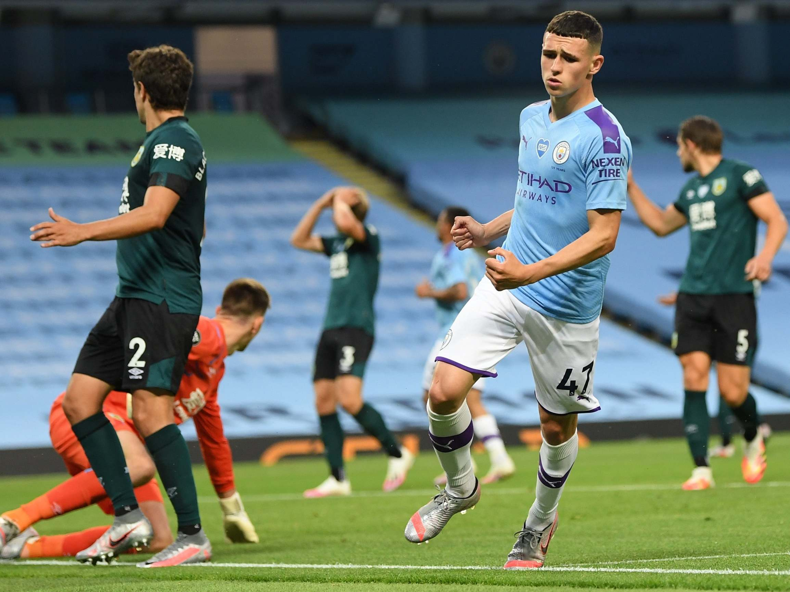

Final Score: Manchester City 5 - 0 Burnley
Manchester City put in another dominating performance against Burnley on Monday, continuing their form from their demolition of Arsenal last week, but the match is soured by a disgusting banner flown overhead before the match. Here are five key takeaways:
1. Manchester City Cruise to Another Easy Victory
It took a bit, but once Manchester City finally unlocked Burnley’s defense, the onslaught was inevitable. A short corner found an unmarked Phil Foden outside the penalty area, who fired a nice shot with his left foot into the bottom corner for the breakthrough. Though Burnley were able to keep them at bay for a little while longer, City were eventually too much for the Lancashire side to handle, and Riyad Mahrez scored off a wonderful long ball from Fernandinho after crossing up Charlie Taylor to make it 2-0. Mahrez scored again five minutes later from the penalty spot after Sergio Aguero was injured on a VAR-given foul in the box by Ben Mee. Even without Kevin De Bruyne on the field, City still found no trouble getting through a usually solid Burnley backline and scored two more - albeit once after De Bruyne came on - en route to a 5-0 victory.
2. Despite a Good Start, Burnley Stand No Chance
To be fair to Burnley, they actually looked pretty good in the opening stages of the game. Okay, they weren’t able to create any chances for themselves, but they were causing City trouble through their defense. Their pressing was causing City problems in their buildup, and their shape was forcing City into the wide areas where they weren’t much of a danger - especially without the crossing of Kevin De Bruyne. This great defending lasted all of about 20 minutes before Phil Foden popped up unmarked during a corner and fired home the opener. After that, Burnley had to open up a bit which allowed City back into the middle and allowed them to completely dominate the game. After the two quick goals before halftime, it was clear that Burnley had no chance in this one, especially with the poor performance in attack. In the entire match, Burnley had one shot and a total xG of 0.03 (understat.com). Probably not what Sean Dyche was hoping for from his side’s first game back.
3. Phil Foden: The Future is Bright for City
Phil Foden may be the biggest beneficiary of Liverpool wrapping up the league this early, as he will no doubt get a significant amount of minutes in the final stretch of the season. With David Silva’s time at Manchester City coming to a close, the 20-year-old will make the best of the opportunities he’s given to show why he’s the perfect replacement. After finding the net in the final minutes against Arsenal, Foden found himself starting against Burnley, and took full advantage. He put in a man of the match performance on Monday, scoring twice in just his fourth league start of the season. He’s a versatile playmaker that will no doubt have a massive impact on Guardiola’s team for years to come.

4. Lack of Depth Will Kill Burnley Going Forward
All you had to do was look at both teams’ benches to see who was probably going to win this match. With the Premier League now allowing five subs for the rest of the season, this has given a huge advantage to teams that have a lot of depth - like City and Liverpool. Unfortunately for Burnley, they could barely get five players on the bench. Only three senior players were on the bench on Monday - one of whom was a goalkeeper - and as the schedule ramps up, this issue is only going to become worse and worse. Now, Burnley did have injuries to three players, but five other healthy senior players are unlikely to renew their contracts past June 30th, leaving Burnley with just 17 first-teamers to play matches every three days over the next month. With the average age of this team being 28, this is really going to take a toll on the squad, and even if you don’t start to see the effects at the end of this season, you will definitely see it into next season. The squad will surely need some beefing up when the transfer window opens.